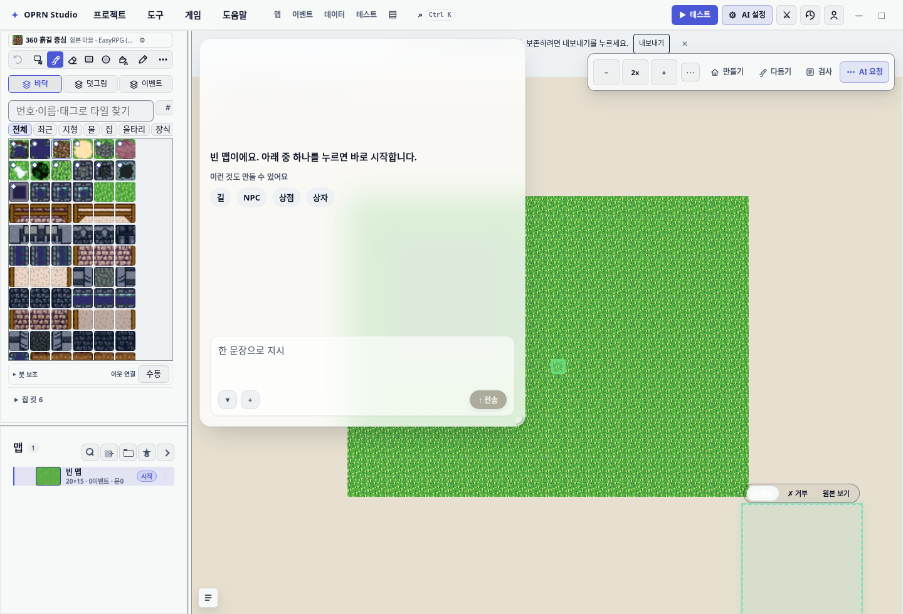
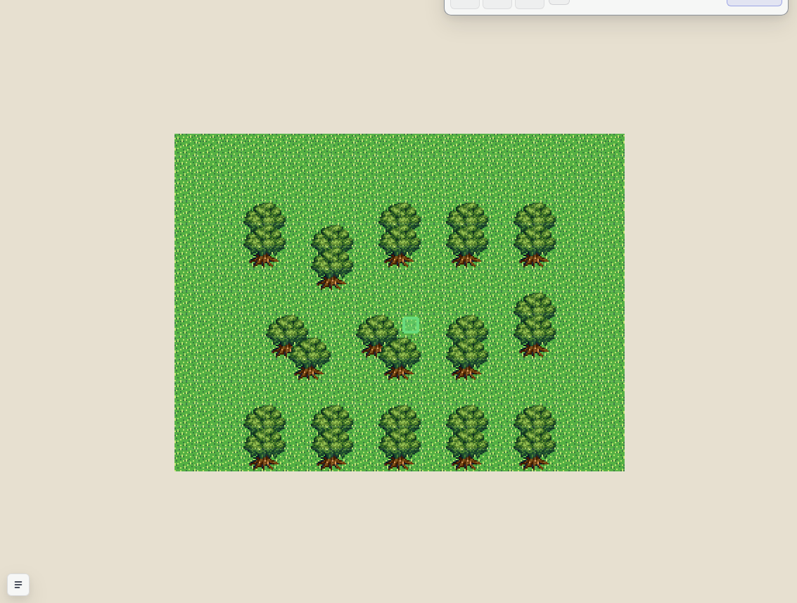
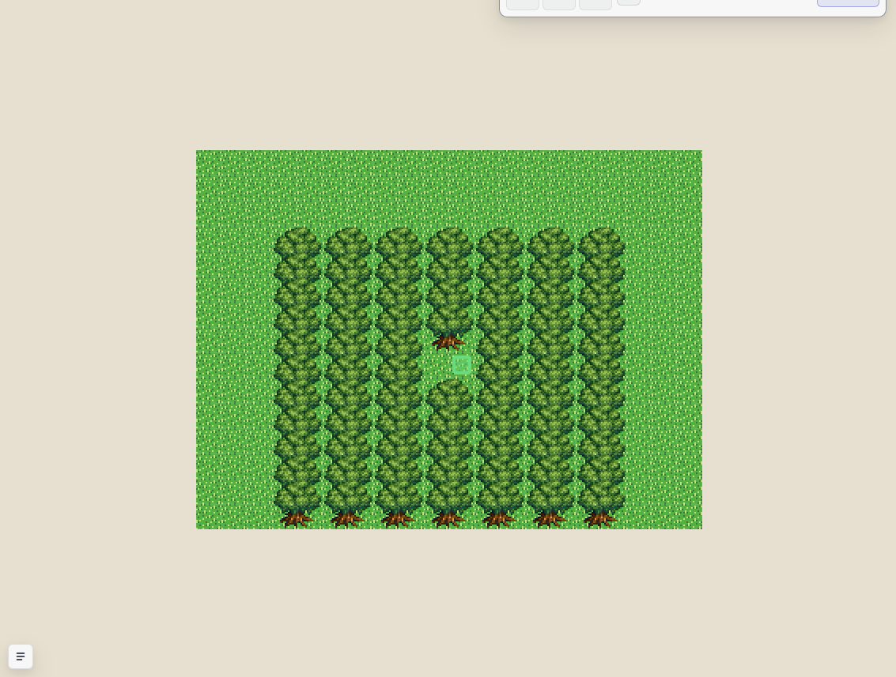
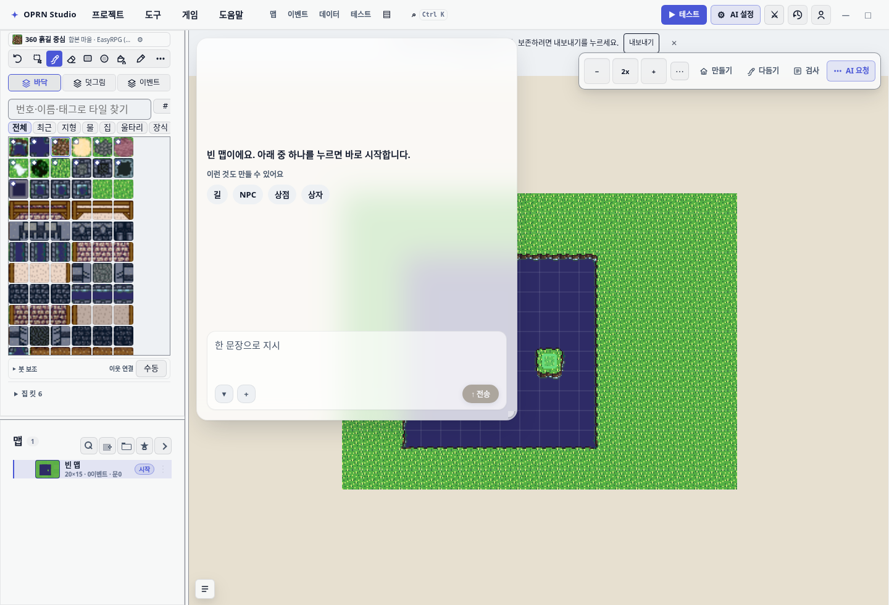
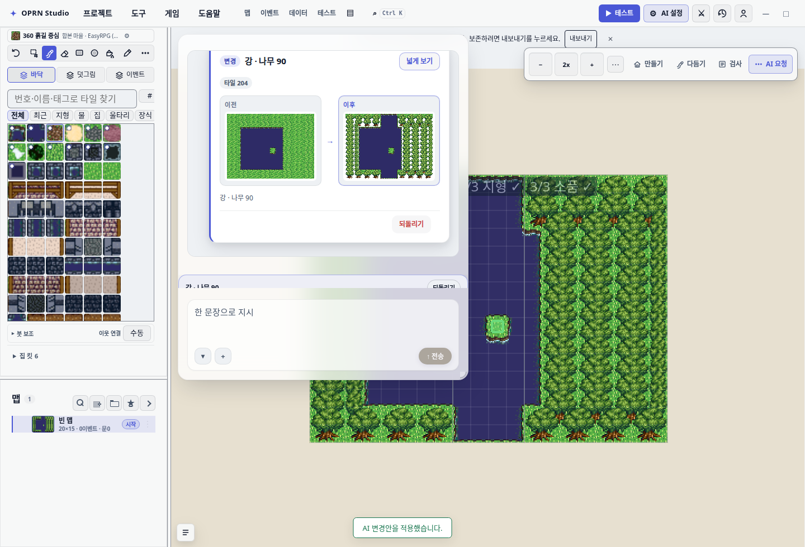
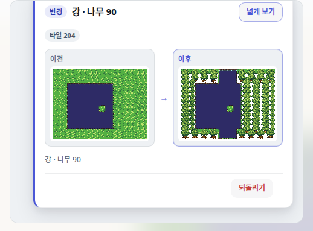
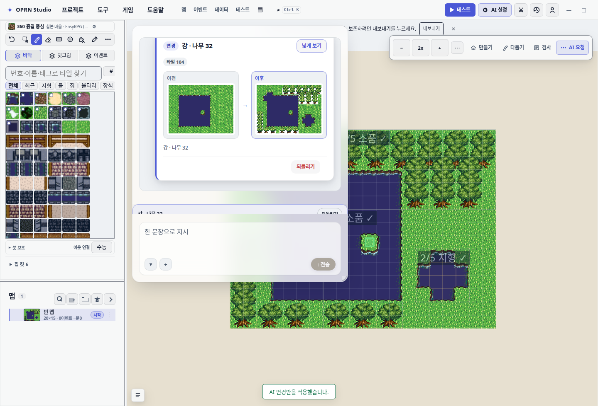

한 줄로. 8월 29일 “나무를 굉장히 많이 심어라 … 아예 통행불가능하게” 가 안 된 이유는 세 개였습니다. 첫 번째(조수가 낼 수 없는 칸을 요구한 거부 루프)는 앞 보고서에서 끝냈습니다. 이번에 남은 두 개를 고쳤습니다.
둘째. 조수가 “시공했습니다” 라고 말해도 실제로는 맵에 아무것도 없었습니다. 승인 버튼을 누르기 전엔 반영되지 않는 게 정상인데, 그 사실을 아무도 말해 주지 않았습니다. 이제 조수 말보다 먼저 “아직 맵에 반영되지 않았습니다 — 36칸 변경안이 승인 대기 중입니다” 가 뜹니다.
셋째. “빽빽하게” 가 구조적으로 불가능했습니다. 나무 심는 기능이 나무 사이를 반드시 비우도록 만들어져 있었습니다. 이제 packing:"dense" 로 빈틈 없이 붙여 심고, 남은 통행 칸 수를 세어 알려줍니다.
수치 출처: docs/2026-08-30-ai-pending-and-dense-assets/ 의 receipt 파일. 12×12 실측은 결정적(같은 입력 → 같은 결과), 24×24 는 실제 모델이라 회차마다 다릅니다(아래 §5 에 두 회차 모두).
영역 작업(맵에서 범위를 끌어 지시하는 방식)은 승인 게이트가 계약입니다. 조수가 만든 변경은 유령 미리보기로만 떠 있고, 사용자가 [적용]을 눌러야 맵에 들어갑니다. 이 설계 자체는 옳습니다.
문제는 그 사실을 말하지 않은 것입니다. 8월 29일 로그에서 두 가지 방식으로 어긋났습니다.
| 시각 | 턴이 끝난 이유 | 화면에 마지막으로 뜬 말 | 실제 상태 |
|---|---|---|---|
| 15:41 | final | “…시공했습니다” | 반영 0칸 |
| 15:44 | max-tool-calls (예산 소진) | 아무 말도 없음 (빈 문자열) | 313칸이 대기 중 |
게다가 한 줄 요약을 만드는 describeRegionTaskResult 는 두 문구가 서로 뒤집혀 있었습니다. 313칸이 대기 중일 때 “적용할 변경이 없습니다” 라고 답하고, 진짜로 아무것도 없을 때 다른 말을 하는 구조였습니다.
자동 적용으로 바꾸지 않았습니다. 그건 승인 게이트를 없애는 일이고, 사용자가 맵을 되돌릴 기회를 빼앗습니다. 대신 조수 문장 앞에 사실을 박았습니다.
아직 맵에 반영되지 않았습니다 — 36칸 타일 변경안이 승인 대기 중입니다.
[적용]을 누르면 반영되고, [버리기]를 누르면 사라집니다.
(조수가 한 말은 그 아래 그대로 남는다)
ok:true / applied:false / changedCells:36 이고, 안내 문장이 “아직 맵에 반영되지 않았습니다” 로 시작합니다. 이전에는 이 자리가 빈 문자열이거나 조수의 “시공했습니다” 였습니다.왜 조수 말을 지우지 않았나. 조수가 무엇을 하려 했는지는 여전히 정보입니다. 사용자가 [적용]을 누를지 판단할 근거가 되니까요. 순서만 바꿨습니다 — 사실이 먼저, 의도가 나중.
나무 심기 기능(place_props)은 자연스러운 숲을 만들도록 설계돼 있었습니다. 기본값이 나무 사이 최소 1칸을 비우고, 3칸까지 벌리기를 선호합니다. 자연스러운 숲에는 맞는 기본값입니다.
그런데 “아예 통행불가능하게” 는 정확히 그 반대를 요구합니다. 개수를 400개로 올려도 기능이 간격을 지켜 버리므로 몇 그루를 심어도 사람이 지나갈 길이 남습니다. 그리고 남았는지 알 방법도 없었습니다 — 결과는 “몇 그루 심었다” 만 알려줬으니까요.


packing:"dense" · 75그루 · 남은 통행 칸 18 / 168같은 영역(14×14), 같은 재료(활엽수 2×2), 같은 개수 상한(400), 같은 시드(11). packing 값만 다릅니다. 실행 스펙: test/e2e/dense-packing-capture.spec.ts
도구가 실제로 돌려준 문장을 그대로 옮기면 이렇습니다.
기존: 활엽수 2x2 28개 = 112타일 배치(poisson, 자연도 0.5, 간격 1~3)
— 372개 건너뜀: 보호셀/간격/공간 부족
dense: 활엽수 2x2 75개 = 300타일 배치(밀집, 간격 0
— 영역 14×14 통행 가능 칸 168→18) — 자리가 다 차서 325개는 놓지 못했습니다바뀐 것이 둘입니다. 첫째, 간격이 0 이 되어 나무가 맞닿습니다. 둘째, 결과가 남은 통행 칸을 세어 말합니다. 이 숫자가 없으면 “막았다”는 말이 확인 불가능한 주장으로 남습니다.
2×2 나무는 위 두 칸이 수관(나뭇잎), 아래 두 칸이 밑동입니다. 게임 규칙상 수관은 통과할 수 있고(나무 아래로 지나가는 것) 밑동은 막힙니다. 밀집 배치는 나무를 한 줄씩 겹쳐 쌓으므로 대부분 칸이 “남의 밑동 아래”가 되어 막히지만, 맨 윗줄 수관 아래에는 밑동이 없어 통과할 수 있는 칸이 남습니다.
여기서 두 갈래가 있었습니다. 영역 바깥 한 줄 위에 나무를 심어 그 줄까지 덮을 수도 있었습니다. 하지만 그건 사용자가 지정하지 않은 칸에 쓰는 일입니다. 그래서 덮지 않고 세어서 말하는 쪽을 골랐습니다. 0칸일 때만 “완전 차단” 이라고 씁니다.
| 12×12 영역, 활엽수 2×2 | 심긴 나무 | 남은 통행 칸 |
|---|---|---|
| 기존 산포 (간격 1~3) | 24그루 | 96 |
packing:"dense" | 66그루 | 12 |
| 1칸 소품(나무 상자)으로 dense | 144개 | 0 (완전 차단) |
1칸 소품은 수관/밑동 구분이 없어 영역을 완전히 봉쇄합니다. 고정 테스트: test/densePackingPlacement.test.ts 6건.
기존 산포는 나무 한 그루를 놓을 때마다 영역의 모든 후보 자리를 다시 검사하고 자연스러움 점수를 다시 계산합니다. 개수 × 면적 곱이라 개수를 크게 올리면 폭주합니다(주석에 남은 실측: 100×100 맵 84그루에 수백 초).
밀집 배치는 그 경로를 타지 않습니다. 점유 격자를 하나 들고 영역을 한 번만 훑습니다. 자연스러움 순서를 매길 필요가 없으니(빈틈 없이 채우는 게 목적이니) 정렬도 점수 계산도 없습니다. 비용은 면적 × 나무 크기입니다.
기존: for 각 나무: for 모든 후보 자리: 검사 + 점수 → 상위 512개 중 선택
dense: for 영역의 각 칸: 들어가면 놓고 점유 표시스키마와 프롬프트를 고쳤다고 조수가 실제로 그 기능을 쓸지는 별개 문제입니다. 그래서 에디터에 붙은 실제 모델(gemini-3.7-flash, Antigravity OAuth)로 8월 29일 문장을 한 글자도 바꾸지 않고 두 번 돌렸습니다.
나무를 굉장히 많이 심어라. 2x2 나무를 많이심어서 아예 통행불가능하게하고 중간중간에 물도흐르게
overExisting 을 요구합니다).

모델이 실제로 호출한 내용은 이렇습니다. 밀집을 스스로 골랐고, 남은 칸 수를 읽고 이어서 채웠습니다.
활엽수 2x2 23개 배치(밀집, 간격 0 — 영역 8×15 통행 가능 칸 70→24)
활엽수 2x2 45개 배치(밀집, 간격 0 — 영역 8×15 통행 가능 칸 110→20)
침엽수 11개 배치(밀집, 간격 0 — 영역 8×15 통행 가능 칸 24→13) ← 24에서 이어받음
침엽수 11개 배치(밀집, 간격 0 — 영역 8×15 통행 가능 칸 20→9) ← 20에서 이어받음세 번째·네 번째 줄이 핵심입니다. 모델은 첫 두 번으로 24칸·20칸이 남았다는 결과 문장을 읽고, 침엽수로 그 칸을 다시 메웠습니다. 남은 칸 수를 보고하도록 만든 이유가 이것입니다.
| 회차 | 소요 | 밑그림 거부 | 같은 명세 재제출 | dense 선택 | 통행 칸 |
|---|---|---|---|---|---|
| run3 | 28.8초 | 2회 (사유 다름) | 0회 | ✅ | 201 → 23 |
| run4 | 23.5초 | 2회 (사유 다름) | 0회 | ✅ | 201 → 121 |

run4 는 숲 구역을 작게 세 개로 잡았습니다(12×6 · 7×7 · 6×9). 잡은 구역 안에서는 제대로 막혔습니다 — 57→15, 29→13, 13→7. 구역 밖 121칸이 남은 것은 기능이 실패한 게 아니라 모델이 계획을 작게 세운 결과입니다. 실제 모델은 회차마다 계획이 다르므로 이 회차를 감추지 않고 같이 싣습니다.
남은 것. run4 의 마무리 문장은 121칸이 걸어 다닐 수 있는데도 “통행이 차단된 울창한 밀림” 이라고 말합니다. 도구는 이제 숫자를 돌려주지만, 모델이 그 숫자를 마무리 문장에 항상 반영하지는 않습니다. 도구 계약이 아니라 모델 습관의 문제이고, 다음 작업 대상입니다.
기존 규칙 18번은 “통행 불가 타일로 사람이 지나갈 칸을 막지 마세요” 입니다. “막아 달라” 는 지시와 정면으로 충돌하니 예외를 적어 줘야 합니다.
그런데 시스템 프롬프트 예산에 남은 자리가 31자였습니다(고정 테스트: test/aiToolCapabilityIndex 의 “does not push … over its budget”). 새 규칙을 4줄 붙였더니 예산을 76자 초과해 뒷부분이 잘려 나갔습니다. 그래서 새 규칙을 포기하고 18번 줄 자체를 줄여 예외를 담았습니다(+22자, 잔여 9자).
18. 실내 장식: 통행 불가 타일(돌바닥 342·계단 246)로 지나갈 칸을 막지 마세요.
막아 달라는 지시는 예외 — place_props packing:"dense".확인차 프롬프트 규칙을 뺀 상태로도 실제 모델을 돌려 봤습니다. 도구 설명만으로도 dense 를 골랐습니다(run4). 규칙은 규칙 18번과의 충돌을 없애는 역할이고, 기능 유도는 도구 설명이 하고 있습니다.
| 파일 | 건수 | 고정하는 것 |
|---|---|---|
test/densePackingPlacement.test.ts | 6 | dense/기존 대조, 요약이 남은 칸을 실측해서 말하는지, 모델이 보낸 minGap 무시, 무회귀(설정 안 주면 타일 배열이 바이트 단위로 동일), 잘못된 값 거부 |
test/regionTaskPendingNotice.test.ts | 6 | 미반영 문구가 조수 말보다 앞에 오는지, 침묵한 턴도 규모를 말하는지, 뒤집힌 요약 회귀 |
test/e2e/real-model-tree-turn.spec.ts | 2 | 실제 모델 한 턴 + 실제 앱의 승인 게이트 |
test/e2e/dense-packing-capture.spec.ts | 2 | 이 보고서의 대조 그림 |
실제 모델 스펙의 단정은 두 개만 뒀습니다. 같은 명세 재제출 0회, 그리고 통행 칸이 줄었을 것. 처음에는 “거부 3회 미만” 으로 뒀는데, 실측 1회차가 거부 4회로 실패했습니다. 4회 전부 사유가 다른 정상적인 반복이었고 턴은 제대로 끝났습니다. 거부 횟수는 건강한 반복까지 실패로 잡는 잘못된 잣대라 바꿨습니다.
영향 파일 9개를 기준선 워크트리(ab85b34a)와 나란히 돌렸습니다. 실패 13건은 기준선과 완전히 동일합니다 — 이 저장소의 기존 빨감이고, 이번 변경이 새로 만든 실패는 없습니다.
E2E_FREEZE_DEV_SERVER=1)로 띄웠으니 코드를 고쳐도 반영되지 않습니다. 첫 실측에서 통행 칸이 null 로 나와 알아챘습니다. 코드를 고치면 서버를 다시 띄워야 합니다.connected:false 가 됐습니다. 이전 서버가 메모리에만 갱신해 두고 있었던 것입니다. POST /auth/refresh 로 되살렸습니다.
바뀐 소스: src/editor/tools/placementTools.ts · src/editor/tools/placePropsDomain.ts · src/editor/tools/v3/constructionTools.ts · src/editor/tools/mapHelpers.ts · src/editor/regionTask/runRegionTask.ts · src/editor/editorToolHook.ts · src/ai/contextBuilder.ts